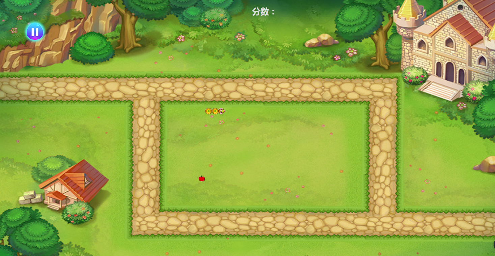
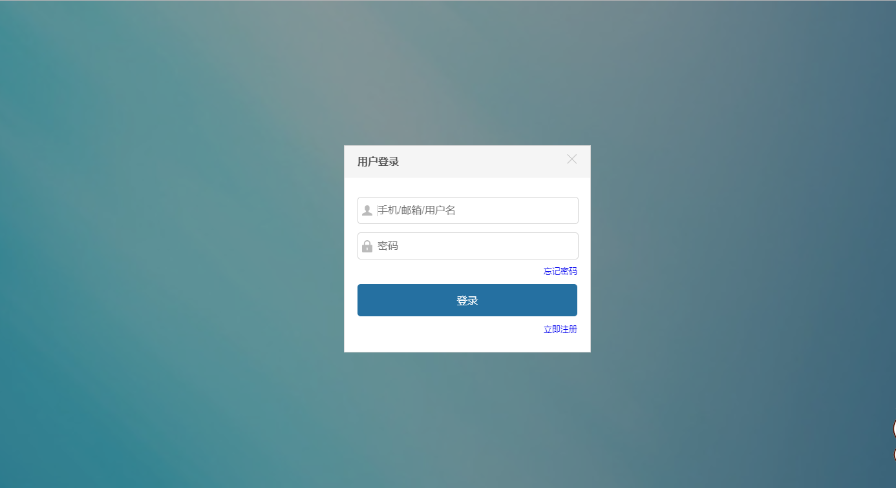

每一天的努力，只是为了让远方变得更近一些。
hello,大家好，我叫范心玲
欢迎光临我的社区
想了解更多，往下滚动哦！(*^▽^*)
|
在线预览 美妆网站 |
 在线预览 贪吃蛇 |
在线预览 旅游网站 |
|
在线预览 Fullpage |
 在线预览 登录框 |
熟悉HTML+CSS布局，遵循W3C标准，编写有语义化，模块化的页面代码。
熟悉JavaScript,对原型、闭包、继承等有自己的理解。
熟练使用jQuery,了解HTTP协议。
熟悉Bootstrap前端框架和响应式布局。
了解ES6，能够解决大部分浏览器兼容问题
了解Ajax工作原理和实现方法。
能够使用git&github进行团队合作。
能够熟练使用PS还原设计稿和切图。
英语四六级。
求职意向：前端开发
教育经历：安阳工学院 本科
专业：软件工程
手机：15713720873
邮箱:ffstar2018@163.com
毕业时间：2019年6月
个人评价：热爱前端工作，学习能力强，个性乐观开朗，积极向上，踏实肯干，
具有良好的团队协作精神，有责任心，能吃苦。